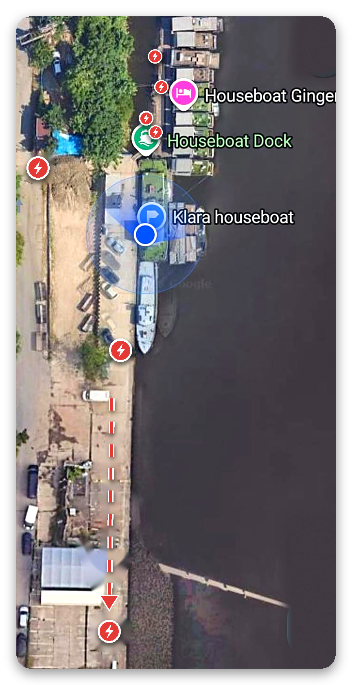
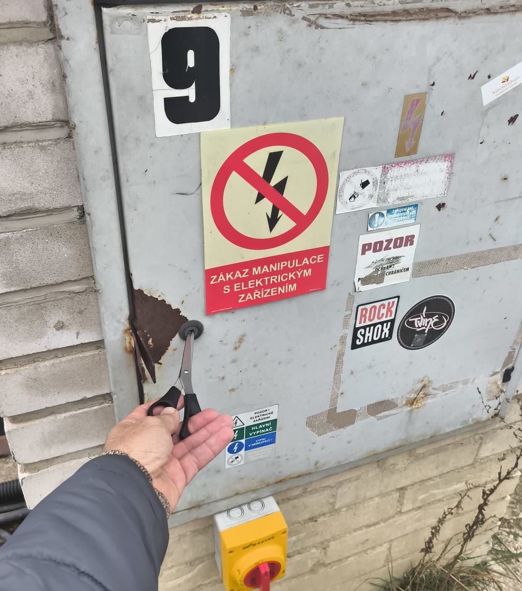

הפסקת חשמל – עזרה ראשונה
הפסקות חשמל בסירות הבית נפוצות יותר מאשר בדירה בשל סיבות של קיבולת ודרישות נוספות עקב מזג האוויר, במיוחד בימים חמים מאוד או קרים מאוד.
אם אתה מסוגל לפעול על לוח חשמל, לבדוק את הפאנלים כמו בתמונה הזאת. IMPORTANT: תמיד ללבוש נעלי גומי כאשר לגעת בכל פאנל חשמלי או מכשיר!
ראה למטה ו תצור איתנו קשר במקרה של צורך!

הנקודות האדומות מראות את מיקום המתגים שיש לבדוק שהם במצב מעלה.
קודם כל, בדוק את לוח החשמל בתוך ההאוסבוט: כל המתגים צריכים להיות במצב מעלה.

(אלא אם יש שלט, קלטת או משהו יוצא דופן).

פאנלים חשמליים על הרציף, דומים לזה. חלקם מאחור לאחור.

תבדקו את המיקום הזה, ליד השער הכחול.

גם את אלה אפשר להפיל.

בתחילת החניון, בדוק אם מספר 9 יש את כל המנתקים (


מספר 9 בפנים (אתה צריך מפתח או משהו שמפנה את המקל הריבועי)
טיפ: זוג מספריים יכול לעזור לסובב את החור הריבועי של הידית כדי לפתוח את מספר 9.
חשוב: תמיד סגור אחר כך את דלת הלוח, במיוחד במזג אוויר גשום.

רחוק יותר, מספר 8 יש כמה מתגים שגם חייב להיות על.
טיפ: זוג מספריים יכול לעזור לסובב את החור הריבועי של הידית כדי לפתוח את מספר 8.
חשוב: תמיד סגור אחר כך את דלת הלוח, במיוחד במזג אוויר גשום.

תבדוק את זה בפנים. תמיד לבדוק אף אחד לא עושה עבודה במורד הנהר!
חשוב: נא לדווח איזה מתג היה כבוי. תצלם לפני ואחרי.
דף זה תורגם אוטומטית מהמדריך באנגלית. במקרה של ספק, הגרסה האנגלית היא הקובעת. המקור באנגלית